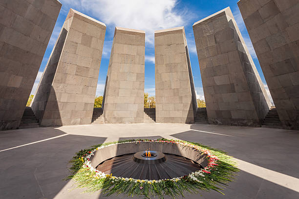

The Idea
Our team wanted to create something that could function as an everyday object while still carrying personal and cultural meaning. The design was inspired by Tsitsernakabert, the Armenian Genocide Memorial in Yerevan.
Rather than making a direct copy of the monument, we used its recognizable form as the starting point for a smaller steel structure that could serve as a firepit while still representing remembrance and resilience.
The Original Inspiration
Tsitsernakabert is built around a circle of inward-facing stone slabs that surround an eternal flame. That arrangement became the main visual reference for the firepit.

Tsitsernakabert
The inward-facing memorial slabs and central flame influenced the geometry and symbolism of the firepit design.
Adapting the Memorial
The original memorial exists at a monumental scale, so its geometry could not simply be reduced without adjustment. As a team, we identified the parts of the form that made it recognizable and considered how those features could work in a compact fabricated object.
The sloped steel panels became the main element of the design. Their inward-facing arrangement reflects the memorial while also creating a protected central space for the fire.
Inspired, Not Replicated
The goal was not to build a miniature replica. We wanted the firepit to carry the visual character and meaning of Tsitsernakabert while still working as its own practical design.
From CAD to Fabrication
Study the Original Form
Review the geometry and symbolism of Tsitsernakabert and identify the features that made the memorial recognizable.
Develop the CAD Design
Create the overall shape, panel dimensions, angles, spacing, and base layout before fabrication began.
Prepare the Steel Pieces
Cut the sheet-metal components using a shear and prepare the edges and surfaces for fitting and welding.
Fit the Panels
Position the repeated steel panels and check their spacing, angles, and alignment before joining them permanently.
TIG Weld the Structure
Weld the panels and supporting frame together while maintaining the intended geometry and a clean finished appearance.
Review the Final Piece
Check the stability, alignment, appearance, and function of the completed firepit as a team.
Working as a Team
The project was completed as a team effort, with responsibilities shared across research, CAD development, material preparation, fitting, welding, and final assembly.
Because every panel affected the overall shape, communication was important throughout the build. Measurements, cutting, positioning, and welding all had to remain coordinated so the repeated geometry would come together evenly.
Working With Steel
The design depended on several similar panels meeting at consistent angles. Small differences in cutting or positioning could make the final shape appear uneven, so careful fit-up became one of the most important parts of the project.
TIG welding gave the team greater control over the joints and helped create a cleaner finished appearance. Since the structure could be viewed from every side, the alignment of the panels and the quality of the welds were both visible in the final result.
Function and Symbolism
The fire adds another connection to the original memorial. At night, light passes between the steel panels and draws attention toward the center of the structure.
At the same time, the piece remains functional. It can be used as a firepit rather than existing only as a display object, which was an important part of the team's original idea.
Project Gallery

What I Learned
This project showed me how much coordination is required to turn a shared idea into a finished physical object. The design needed to be meaningful, practical, stable, and possible to fabricate with the available tools.
It also strengthened my understanding of how CAD, sheet-metal preparation, fit-up, welding, and teamwork depend on one another. A small change or inaccuracy in one stage could affect the rest of the build.
What made the project especially important to me was that the finished piece had a purpose beyond fabrication practice. It allowed our team to create something functional while connecting the work to Armenian history and cultural identity.